Role: Illustrator
I worked with the wonderful folks at Twitter Studio to create a series of illustrations for their SXSW Emoji Engine — a tool that, when prompted with an emoji, would recommend must-try food and drink hotspots across Austin. I created over a dozen original food and drink illustrations that became the visual backbone of the campaign.
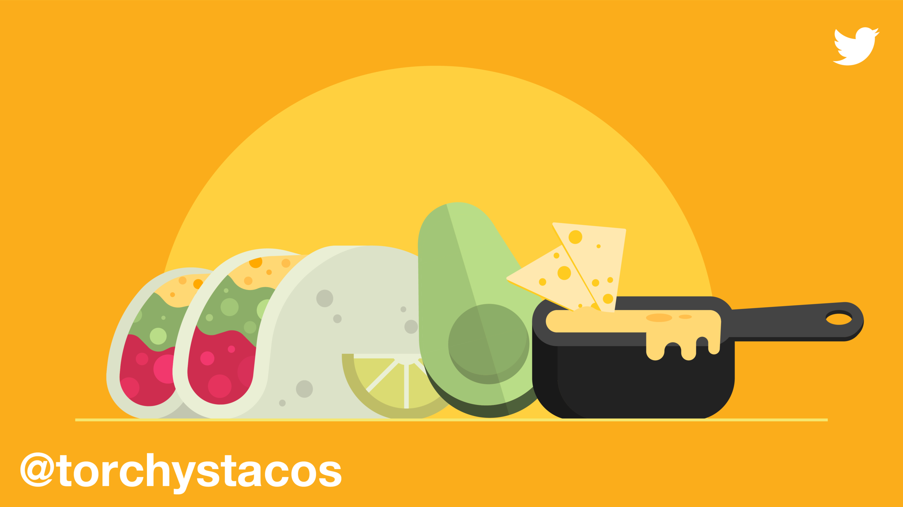
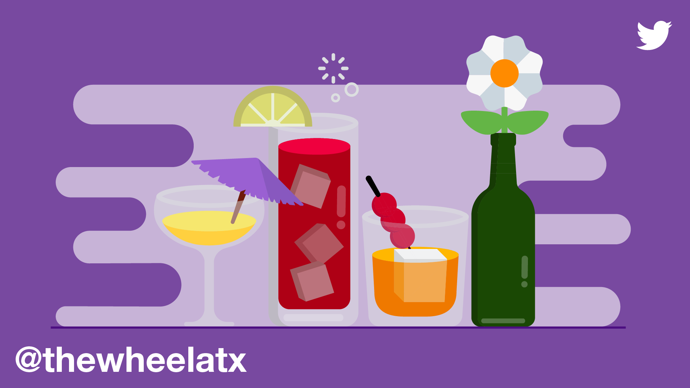
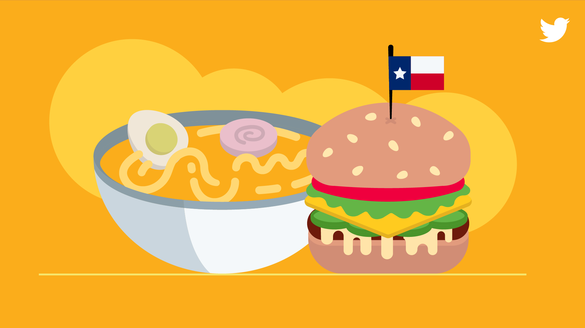
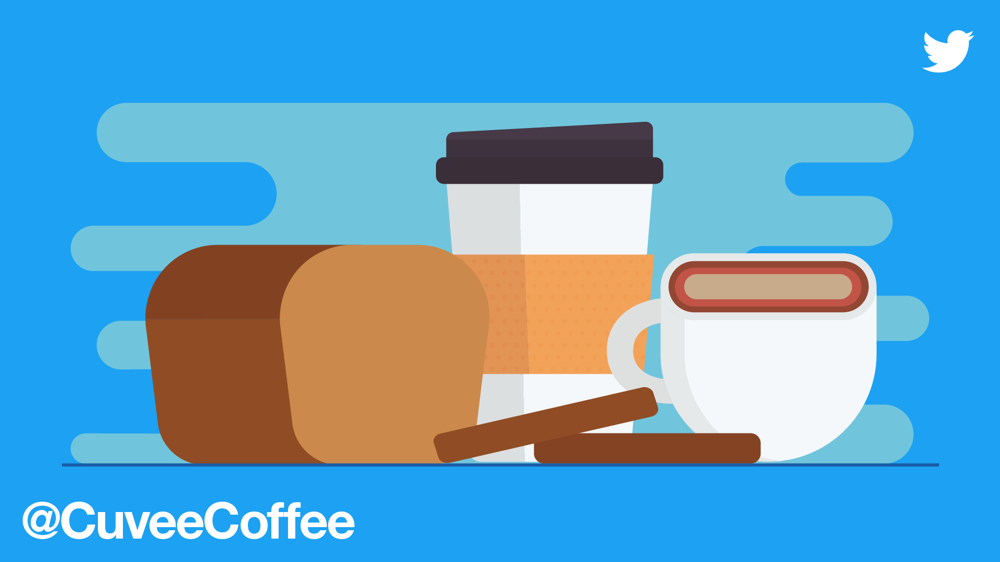
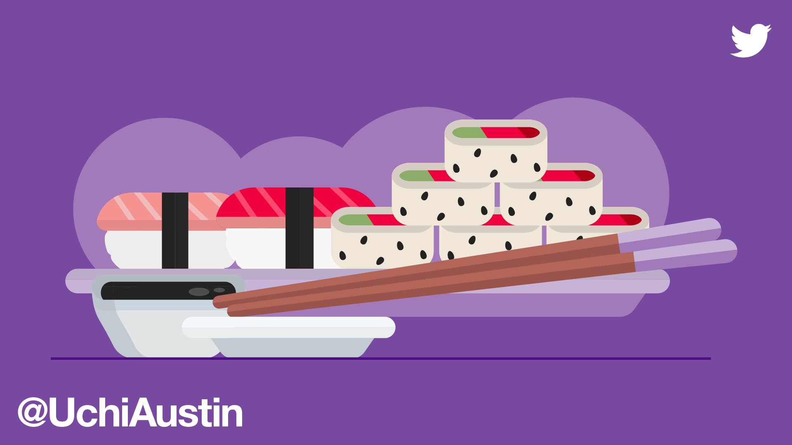
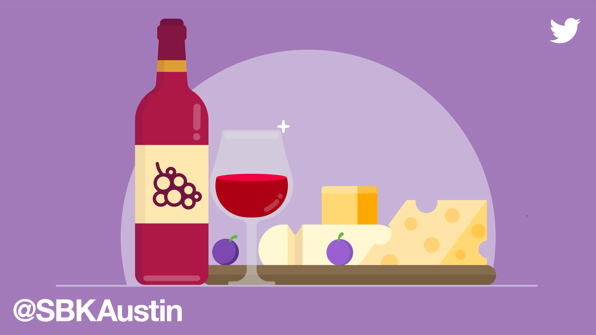
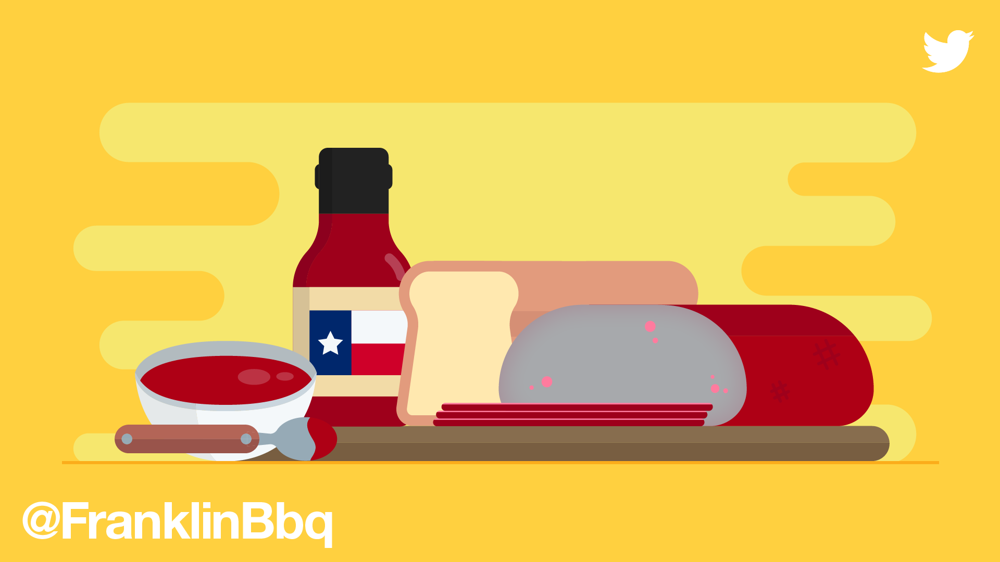
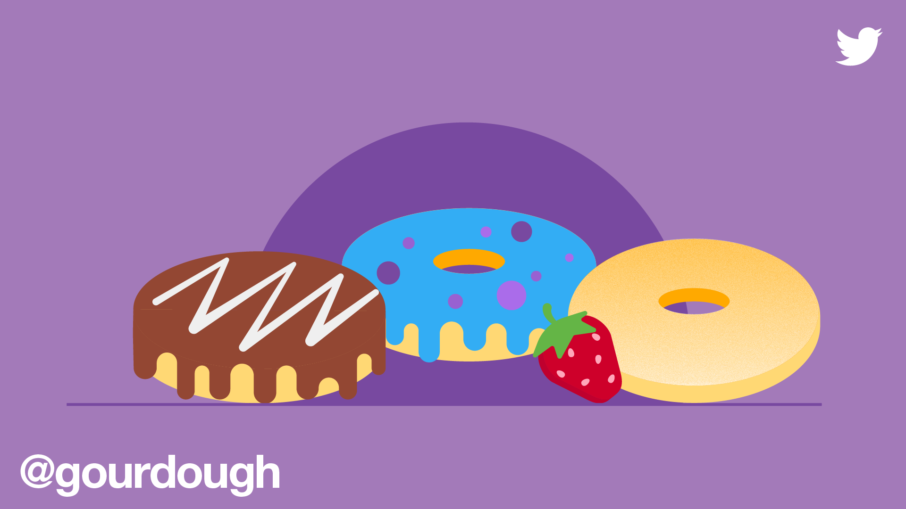
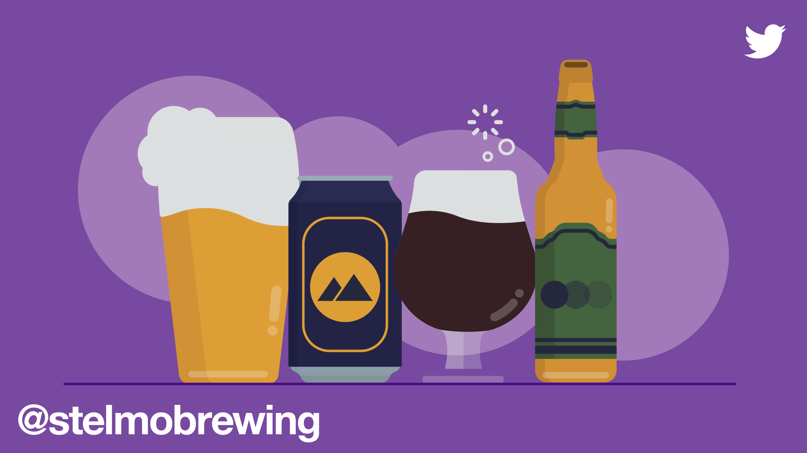
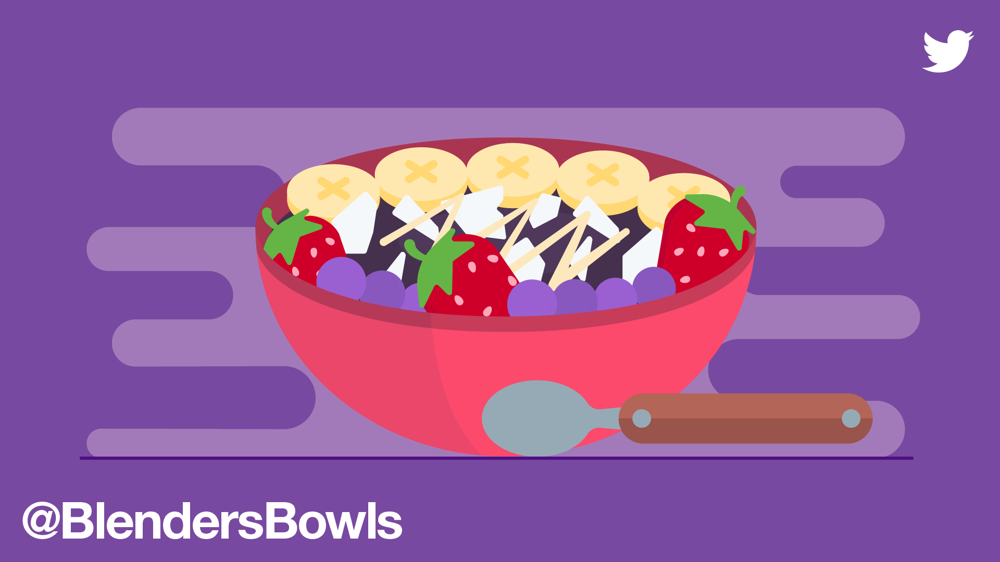
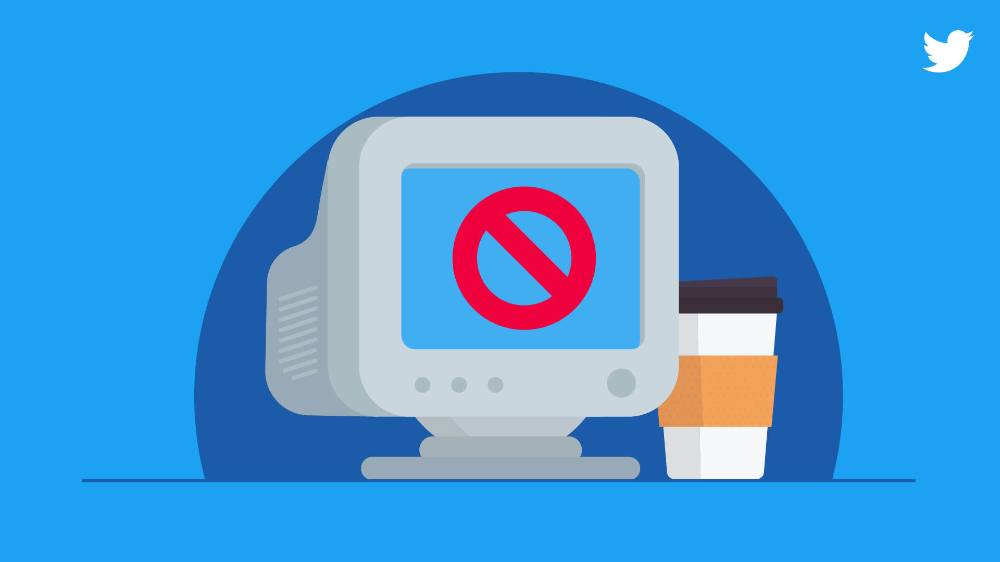
Credits